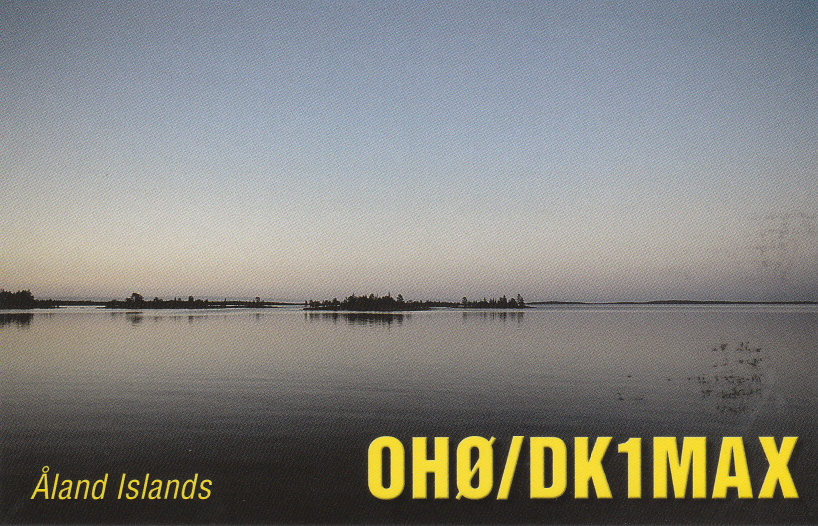
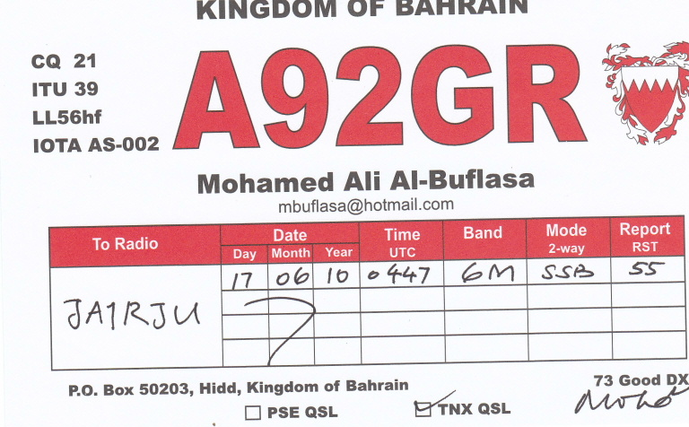

Flash ! DX
|





|
|
Who said 6M was a dead band ?
|
(注) このReportをご覧になる方へ
[Back Issues Mar.2011]
TIME:UTC(JST-09:00)
Report from JA1RJU(PM95sq)
31.Mar.2011(10:00d)
VK-TV 02:45- 46.172 -- VK video
FK8CP 05:50 50.110 CW CQing RST 569
FK8CP 06:57 50.110 CW CQing
VK8RAS/b 07:00- 50.047 CW Beacon
VK6RSX/b 07:00- 50.304 CW Beacon RST 599+
VK6JJ 07:23 50.110 CW RST 579
VK6JJ 07:43 50.180 SSB RS 57/55
VK4RTL/b 07:45- 50.282 CW Beacon (QH30jp)
VK6OX 07:51 50.110 CW CQ
VK6RSX/b 08:00- 50.304 CW Beacon RST 599+
FK8CP 08:39 50.110 CW CQing
VK4WTN 08:52 50.110 SSB CQ
VK8RAS/b 09:00- 50.047 CW Beacon
VK4RHT/b 09:00- 50.2815 CW Beacon
VK4RTL/b 09:00- 50.282 CW Beacon
VK6RSX/b 09:00- 50.304 CW Beacon
VK6KP 09:05 50.110/135 SSB
FK8CP 09:23 50.110 CW CQing
Report from JA1RJU(PM95sq)
30.Mar.2011(15:00d)
VK-TV 01:45- 46.172 -- VK video
FK8CP 03:39 50.110 CW CQing RST 599
FK8SIX/b 03:39- 50.080 CW Beacon FSK RST 599
FK8CP 03:47 50.110 CW @ RST 599/529!
FK8CP 03:53 50.110 CW/SSB very strong!
VK4RTL/b 05:10- 50.282 CW Beacon (QH30jp)
VK4WM 05:53 50.110 CW CQ
VK4RTL/b 06:10- 50.282 CW Beacon
FK8CP 06:13 50.110 CW CQing
VK-TV 06:45- 46.240 -- VK video
VK8RAS/b 06:45- 50.047 CW Beacon
FK8CP 08:35 50.110 SSB/CW CQing
VK4WTN 09:10 50.110/140 SSB
VK4RTL/b 09:12- 50.282 CW Beacon
FK8CP 09:15 50.110 SSB CQing
VK6RSX/b 09:17- 50.304 CW Beacon
VK4WTN 09:20 50.100 CW CQ
VK4MA 09:24 50.102 CW CQ
VK4FNQ 09:28 50.160 SSB @ RS 59
VK8MS 11:57 50.110 CW CQ
VK8VF/b 12:03 50.310 CW Beacon
DU7/PA0HIP 13:03 50.110 CW/SSB CQ
Report from JA1RJU(PM95sq)
29.Mar.2011(15:00e)
VK-TV 02:40- 46.172 -- VK video S9
FK8CP 02:45 50.110 CW/SSB CQing RS 59 (RG37fr)
VK4WM 02:56 50.110 CW @
VK4WM 03:05 50.110/130 SSB
VK4EK 03:10 50.110 SSB
VK-TV 03:35- 46.172/240 -- VK video S9
FK8CP 03:35 50.110 CW/SSB CQing
VK6RSX/b 07:20- 50.304 CW Beacon
FK8CP 08:40 50.110 CW CQing
VK4EK 08:50 50.110 SSB @
VK4WM 08:55 50.100 CW
VK-TV 08:55- 46.172 -- VK video S9
FK8CP 09:00 50.110 CW/SSB CQing
VK4WM 09:03 50.130 SSB
VK4ZJB 09:05 50.110 CW
9M6XRO 09:08 50.110 CW CQing RST 599
VK6RSX/b 09:45- 50.304 CW Beacon RST 599
VK6KP 09:50 50.110/130 SSB RS 59
VK4WM 09:55 50.110 CW
VK8RAS/b 09:58- 50.047 CW Beacon
VK6JQ 10:00 50.101 CW RST 599+
DU7/PA0HIP 12:54 50.105/110 CW CQ
VK8MS 13:08 50.110 CW CQ
Report from JA1RJU(PM95sq)
28.Mar.2011(15:00b)
VK-TV 04:00- 46.172 -- VK video S9
VK6RSX/b 10:00- 50.304 CW Beacon
DU7/PA0HIP 13:15 50.115 SSB RS 59
VK8MS 13:33 50.110/142 SSB
VK8MS 13:41 50.110 CW CQ
Report from JA1RJU(PM95sq)
27.Mar.2011(15:00d)
VK-TV 03:05- 46.172 -- VK video S9
FK8CP 03:47 50.110 CW/SSB CQing
VK4EK 03:59 50.110 SSB CQ
VK4BLK 04:08 50.110 SSB CQ
VK4RTL/b 04:10- 50.282 CW Beacon (QH30jp)
VK4FP 04:15 50.110 CW CQ
FK8CP 04:15 50.110 CW CQing
VK4RHT/b 04:43- 50.2815 CW Beacon (QH23pc)
VK5AYD 09:15 50.110 CW CQ weak
FK8CP 09:41 50.110 CW CQ RST 599
VK4WM 09:59 50.110 CW CQ
VK5AYD 10:10 50.110 CW CQ RST 599
VK8MS 12:23 50.110 SSB CQ
Report from JA1RJU(PM95sq)
26.Mar.2011(15:00d)
VK-TV 05:00- 46.172 -- VK video S9+
VK4FNQ 06:08 50.110/150 SSB CQing RS 56
VK5PO 09:27 50.110 CW CQ weak
VK5PO 09:40 50.110 CW @ RS599 QSB
VK8MS 12:08 50.110 SSB CQ
VK4ABW 12:12 50.110 SSB CQ
VK8MS 12:16 50.130 SSB @ RS 58-9
4W3A 12:32 50.110 SSB
VK8MS 12:50 50.110/130 SSB CQ
VK8MS 13:15 50.103 Cw CQ
Report from JA1RJU(PM95sq)
25.Mar.2011(15:00c)
VK-TV 03:00- 46.172 -- VK video S9+
VK4WM 04:50 50.110 CW CQ
FK8CP 04:52 50.110 CW/SSB CQ
VK4WM 04:56 50.100 CW CQ
VK4RTL/b 05:05- 50.282 CW Beacon (QH30jp)
FK8CP 05:27 50.110 CW/SSB CQing
FK8CP 06:30 50.110 CW CQ
Report from JA1RJU(PM95sq)
24.Mar.2011(15:00c)
VK-TV 03:30- 46.172 -- VK video S9
VK4ZJB 04:17 50.110 SSB CQ
VK4EK 04:20 50.110 SSB CQ
VK4BG 04:21 50.110 SSB CQ
VK4WTN 04:22 50.110 SSB CQ
FK8CP 04:25 50.110 CW CQ
VK4RTL/b 04:30- 50.282 CW Beacon (QH30jp)
VK4RHT/b 04:30- 50.2815 CW Beacon (QH23pc)
VK4ZJB 04:35 50.110 CW CQ
VK4BG 05:07 50.110 SSB CQ
VK4RTL/b 05:25- 50.282 CW Beacon (QH30jp)
VK4RHT/b 05:25- 50.2815 CW Beacon (QH23pc)
Report from JA1RJU(PM95sq)
23.Mar.2011(15:00c)
VK-TV 03:50- 46.172 -- VK video
VK4ZJB 04:35 50.110 SSB
FK8CP 04:36 50.110 SSB
VK4ACE 04:37 50.140 SSB
FK8SIX/b 04:37- 50.080 CW Beacon RST 599
VK4EK 04:38 50.110 SSB
FK8CP 04:40 50.110 SSB @
VK4WTN 04:42 50.145 SSB
VK4ACE 04:42 50.140 SSB @
VK4FIL 04:50 50.145 SSB
VK4KUS 04:51 50.125 SSB
VK4ZJB 04:52 50.110 SSB
VK4KUS 04:51 50.125 SSB
VK4ZJB 04:52 50.110 SSB
FK8CP 04:58 50.130 SSB
VK4AHW 04:59 50.145 SSB
VK2YO 05:04 50.145 SSB @
VK4MSA 05:06 52.130 SSB CQ listening 50.135MHz
VK4MSA 05:15 52.130/50.135 SSB @ RS 59/57 FT-847 100W
VK4MSA 05:30 52.130/50.135 SSB still good RS 57
VK4RTL/b 05:48 50.282 CW Beacon
VK4ZJB 05:54 50.135 SSB
VK4WTN 05:55 50.090 CW
VK4RTL/b 06:20 50.282 CW Beacon
VK4EK 06:23 50.110 SSB CQing
VK4FNQ 06:25 50.110 SSB CQing RS 59
VK4WM 06:27 50.110 CW CQing
VK4WM 06:40 50.110 CW CQing
今日は午後2時前(日本時間)から強力なFK8とVK2/4/6のオープンがあった。
コンデションは52MHz帯までパスが伸びていたため、52.130MHzで運用するVK4MASの信号がJA側で良く聞こえていた。
先日、52MHz帯でJAとのQSOを行うために52.100MHzでCQを出していたVK4MASは、
JA局がバンドプランが変更され、52.000-52.300MHz(VoIP専用の周波数に指定)のSSB/CWの運用は出来ない事を知らずにJAからの応答を待っていた。
その後、JA1LZK局からのメールによりJA局とのQSOは50/52MHzの"スプリット周波数"が有効とのアドバイスを受け、
今日はその指示通りに52.130MHzでCQを出しながら、50.135MHzを受信する運用でJAとのQSOにトライしていた。
VK4MASは、事前にクラスターにスプリット周波数をアナウンスしていたが、
JA側でもさすがに52MHzまで即座に対応できる局は少なく、CQに応答してQSO出来たJAは数局に留まった。
VKの6mバンドが52MHz帯から50MHz帯に移行してからは、52MHz帯だけのVK局はほとんど見られなかったが、
久しぶりに50MHz/52MHz帯のQSOが行われた。
VKが50MHzに出始めたのは、46MHz帯のTVの周波数に混信を与えない、西オーストラリアの"VK6WD"が1994年に出てきたのが最初？。
その後、1985年になってVK4/VK8なども50MHzにQRVを始め、1987年にはVKの全エリアで50MHz帯を使う様になった。
1989年には特別なQSOを除き100%近いVK局は50MHz帯で運用している。
JAから52MHzだけしか運用出来ないVKを相手にQSOするのはこの時以来かも知れない。
|
Report from JA1RJU(PM95sq)
22.Mar.2011(15:00b)
VK-TV 03:40- 46.172 -- VK video
FK8CP 04:55 50.110 CW CQ RST 589
Report from JA1RJU(PM95sq)
21.Mar.2011(15:00b)
VK-TV 05:40- 46.172 -- VK video weak
VK6RSX/b 05:55- 50.304 CW Beacon weak
Report from JA1RJU(PM95sq)
20.Mar.2011(15:00b)
FK8CP 04:14 50.110 CW CQ RST 589
FK8CP 04:50 50.110 SSB/CW
Report from JA1RJU(PM95sq)
19.Mar.2011(15:00c)
VK-TV 04:40- 46.172/240 -- VK video come up S9
VK4RTL/b 05:35- 50.282 CW Beacon (QH30jp)
VK4RHT/b 05:35- 50.2815 CW Beacon (QH23pc)
VK4ABW 05:36 50.130 SSB
VK4EK 05:50 50.110 SSB
VK6KP 06:20 50.110 SSB CQ
VK6RSX/b 06:50- 50.304 CW Beacon (OG89)
Report from JA1RJU(PM95sq)
18.Mar.2011(15:00b)
VK-TV 03:30- 46.172/240 -- VK video come up S9
VK4RTL/b 04:45- 50.282 CW Beacon (QH30jp)
Report from JA1RJU(PM95sq)
17.Mar.2011(15:00c)
VK-TV 02:10- 46.172 -- VK video come up S9
VK8RAS/b 04:45- 50.047 CW Beacon
VK4RTL/b 04:45- 50.282 CW Beacon (QH30jp)
VK4WM 04:50 50.110/140 SSB
VK4WTN 04:50 50.094 CW
VK4EK 04:50 50.110 SSB
FK8CP 05:04 50.110 SSB CQ RS 59
VK4ADC/P 05:26 50.110/120 SSB
FK8CP 05:26 50.110 CW
VK4MA 05:28 50.100 CW
VK4EK 05:47 50.110/120 SSB CQ
VK4FNQ 06:01 50.110 SSB CQ RS 59+
VK4ZJB 06:16 50.110 SSB CQ
VK4EK 06:40 50.110 SSB CQ
Report from JA1RJU(PM95sq)
16.Mar.2011(15:00a)
Report from JA1RJU(PM95sq)
15.Mar.2011(15:00d)
VK-TV 04:00- 46.172 -- VK video come up S9
FK8SIX/b 04:45- 50.080 CW Beacon
FK8CP 04:57 50.110 SSB CQ RS 59
FK1TK 04:57 50.110 SSB CQ
VK8RAS/b 04:59 50.047 CW Beacon
VK4RTL/b 04:59- 50.282 CW Beacon (QH30jp=TOWNS VILLE, QLD 4814)
VK4RHT/b 04:59- 50.282 CW Beacon (QH23pc=ATHERTON, QLD 4883)
FK1TK 05:00 50.130/140 SSB very strong!
VK4WTN 05:03 50.150 SSB
VK4WM 05:07 50.095 CW
VK4AHW 05:11 50.135 SSB
FK8CP 05:13 50.110 CW CQ BA
VK4RTL/b 04:59- 50.282 CW Beacon strong!
XV1X 05:32 50.110/098 CW RST 599!
VK4BG 05:42 50.110/180 SSB
VK4MA 05:55 50.100 CW @
VK4APE 06:15 50.110 SSB calling BD4JK
VK4EK 06:15 50.110 SSB
VK8RAS/b 07:20 50.047 CW Beacon
Report from JA1RJU(PM95sq)
14.Mar.2011(15:00c)
VK-TV 02:00- 46.172 -- VK video come up S9
FK8CP 03:59 50.110 CW CQ RST 559
VK4EK 03:59 50.110 SSB CQ RS 56
VK4EK 04:40 50.110 SSB CQ RS 59
VK6RSX/b 07:28- 50.304 CW Beacon
VK8MS 12:27 50.110 SSB
Report from JA1RJU(PM95sq)
13.Mar.2011(15:00c)
VK-TV 02:05- 46.172 -- VK video come up S9
FK8CP 03:16 50.110 CW CQ RST 599
VK4BG 03:21 50.110 SSB CQ
VK4WTN 03:24 50.110 SSB
FK1TK 03:27 50.110 SSB
VK4ACE 03:28 50.110/150 SSB
VK4WTN 03:31 50.160 SSB @
VK4CZ 03:36 50.150 SSB
FK8CP 03:37 50.140 SSB CQ
VK4MA 03:38 50.102 CW
FK8SIX/b 03:45- 50.080 CW Beacon
VK4ACE 03:47 50.110/180 SSB
VK4AHW 03:49 50.120 SSB
FK8CP 03:49 50.104 CW
VK4CZ 03:51 50.145 SSB
VK5AYD 03:51 50.175 SSB
VK4RTL/b 03:58- 50.282 CW Beacon Towns ville (QH30jp)
FK8CP 03:58 50.104 CW Listening UP
VK4MA 04:02 50.102 CW @
FK8CP 04:07 50.140 SSB Listening 10UP
VK4MA 04:10 50.110/130 SSB
VK4TL 04:16 50.140 SSB
VK4WM 04:20 50.100 CW
VK8RAS/b 04:22 50.047 CW
VK4BEG 04:34 50.115 SSB
VK4BKP 04:36 50.115 SSB
VK8MS 04:47 50.115 SSB
VK4RTL/b 05:00- 50.282 CW Beacon strong!!
VK4BEG 05:03 50.110 SSB
VK4ZDP 05:08 50.110/130 SSB
11日に発生した、「東北地方太平洋沖地震」(東日本大震災)に寄る被害状況は、日を追うごとに拡大している。
震源地に近い三陸沿岸では、遂に死者が「万を超える」のではと予測されるほどの悲惨な状況となっている。
13日現在、13都道県で3,000人以上の死者、行方不明者が出ている。
内陸部ではライフラインも徐々に復旧してきているとは言え、太平洋沿岸では見通しも立たない状態。
更に、12日に「福島第一原発」で爆発事故が発生、放射能汚染の影響も懸念されている。
関東地方から東北地方への高速道路網は完全に遮断されている影響で「流通経路」が絶たれ、都市部では食料、
生活用品の入手が困難になりつつある。
原発の停止による電力不足で、政府は利用者に節電を要請している。東京電力では「計画的停電」も検討している。
現在、7.030MHz(+-5KHz)でJARL(JA1RL)による「非常通信」が行われている。
一般の運用には非常通信確保のために十分な配慮が必要。
|
Report from JA1RJU(PM95sq)
12.Mar.2011(05:00b)
VK-TV 03:25- 46.172 -- VK video come up S7
Report from JA1RJU(PM95sq)
11.Mar.2011(15:00c)
VK-TV 03:40- 46.172 -- VK video come up S9+
FK1TK 03:50 50.115 SSB CQing
FK8SIX/b 03:50 50.080 CW Beacon RST 579
FK8CP 04:10 50.130 CW UP 5KHz
FK8CP 04:17 50.130 SSB CQing
VK4CZ 04:25 50.110/140 SSB CQ →QSO 140MHz
VK4EK 04:30 50.110 SSB CQ
VK4DB 04:50 50.110 CW
FK8CP 05:02 50.110 CW/SSB CQ CQ RST 579-599
VK4RHT/b 06:59- 50.282 CW Beacon QH23pc
日本時間の11日の午後2時46分頃、東北地方で非常に強い地震が発生。震源地は宮城県・牡鹿半島の東南東約130Kmで、
深さは約24Km。地震の規模はマグニチュード(M)8.8を記録した。(注＝3/13日にM9.0に変更された)
この地震で青森県、岩手県、宮城県、福島県、茨城県の太平洋沿岸に大津波が来襲、多数の死傷者が出ている。
この地震は首都圏でも震度5〜6を記録し、死者も出ている。
東京タワーの電波送信アンテナの上部が曲がる被害を受けている。
地震による津波の被害は北海道から沖縄までの全国的渡り、遠く太平洋を越えた北米、南米まで津波は到達した。
1m以上の津波が到達したカリフォルニアでは被害が出た。
地震の影響もまともに受けた東北地方は全県停電となり、ライフラインにも大きな影響が出ている。
三陸海岸をはじめ岩手、宮城、福島の太平洋沿岸では津波による多数死者が予想されているが、
今のところ死者数など被害状況は全く把握出来ていない。
関東大震災の大地震を大きく上回るM9.0の観測史上最大となる被害の復旧は、かなりの期間が予想される。
この地震は「平成23(2011)年東北地方太平洋沖地震」と命名された。
|
Report from JA1RJU(PM95sq)
10.Mar.2011(15:00d)
VK-TV 03:10- 46.172/240 -- VK video come up S9+
FK1TK 03:42 50.110 SSB CQing
FK8SIX/b 03:48 50.080 CW Beacon RST 579
VK4ZJB 03:58 50.110 SSB
VK4CP 03:59 50.110/130 SSB
VK4FIL 04:03 50.110 SSB
VK4EK 04:03 50.110/130 SSB
VK4WTN 04:10 50.090 CW
VK4ACE 04:14 50.140/150 SSB
VK4AHW 04:16 50.125 SSB
VK4FIL 04:20 50.150 SSB QRM
VK4ZJB 04:25 50.135 SSB
FK8CP 04:35 50.130 CW UP 5-9
VK4BKP 04:42 50.175 SSB
FK1TK 04:47 50.110 SSB
FK8SIX/b 04:50 50.080 CW Beacon still RST 579
VK4XE 04:56 50.110/120 SSB
VK2BTS 05:04 50.160 SSB @ QG60LG
VK8RAS/b 05:15- 50.047 CW Beacon
VK4RTL/b 05:15- 50.282 CW Beacon
VK4AHW 05:16 50.125 SSB QG63 S59++
VK4KLC 05:26 50.160 SSB @ QG62
VK4ADC 05:43 50.190 SSB @
VK4CRO 05:47 50.120 SSB @
VK4NE 05:50 50.170 SSB
VK4FNQ 06:10 50.160 SSB
VK4APE 06:11 50.120 SSB
VK4ALH 06:18 50.140 SSB @
VK4NE 06:20 50.170 ` SSB @
VK4WM 06:45 50.100 CW
VK4AHW 06:49 50.125 SSB CQ
VK8RAS/b 07:00- 50.047 CW Beacon
Report from JA1RJU(PM95sq)
09.Mar.2011(15:00c)
VK-TV 03:50- 46.172 -- VK video come up S9++
FK8CP 04:55 50.110 SSB CQing
FK1TK 05:07 50.110/120 SSB
VK4EK 05:17 50.110 SSB
FK1CP 05:30 50.110 CW CQ CQ
VK6KP 10:30 50.110/130 SSB
Report from JA1RJU(PM95sq)
08.Mar.2011(15:00d)
VK-TV 04:40- 46.172/240 -- VK video come up S9+
BY-TV 06:00- 49.750 -- strong buzz in 6m band
FK8CP 06:37 50.110 CW/SSB CQing RST 559/55
VK4EK 06:56 50.110 SSB
VK4XE 07:00 50.110 SSB
VK4WM 07:03 50.100 CW
VK4WTN 07:10 50.100/145 SSB
VK4RY 07:15 50.110 SSB CQing
VK4EK 07:16 50.110/160 SSB
VK4CP 07:17 50.110/130 SSB
VK4AHW 07:18 50.110 SSB
VK4FNQ 07:23 50.110 SSB CQ
VK4WTN 07:27 50.090 CW
VK4XE 07:30 50.120 SSB
VK4XE 07:36 50.110 SSB @
XV1X 08:11 50.098 CW @ listen UP (QSL via OK1DOT)
VK8MS 12:20 50.110 SSB
9M6YBG 13:09 50.105 CW @
DU7/PA0HIP 13:20 50.106 CW/SSB
VK8MS 13:33 50.130 SSB RS56 QRT
VK6BHY 13:44 50.110 SSB CQing weak
午後から46MHz帯のVKのVideoが強力に入感してきたが、それに続いて50MHz帯まで入り込んできたのは、
この時期にしては珍しい49.750MHzの大陸方面(中国)からの強力TVのバズ(buzz)。
1530JST頃になって、50.110MHzのCWでCQを出すFK8CPの弱い信号が聞こえ出した。
さすがに、この弱さではJAからの信号は取れなかったのか、最後にSSBでCQを出した後に引っ込んでしまった。
FK8CPが聞こえなくなる寸前に、50.110MHzでVK4EKのCQが聞こえだした。
その後はVK4の"常連"が次々に出てきてきたが、VK4側の信号の強さにかなり差があったのは、
オープンのエリアが狭かったのかも。
VK4のコンデションと入れ替わる様に50.098MHzのCWでベトナムのXV1Xが強力に入感して、
1-2KHz UPのスプリットでJA局を捌いていた。XV1XのQSLはOK1DOTへ。
|
Report from JA1RJU(PM95sq)
07.Mar.2011(15:00c)
VK-TV 03:25- 46.172/240 -- VK video come up
FK8SIX/B 03:58- 50.080 CW Beacon FSK RST 569!
FK8CP 04:09 50.110 CW @ RST 599
FK1TK 04:20 50.130 SSB @ RS 59 (IC-7000 100W+2el・デルタループ)
FK8CP 04:25 50.128 SSB listening 50.120 !!
FK8CP 04:32 50.110/140 SSB CQ CQ
FK8CP 04:48 50.140 CW 05:05 F.out
VK6RSX/b 08:40- 50.304 CW Beacon
VK6KP 09:34 50.110 SSB
VK8MS 12:39 50.101 CW
今日も午後からFK8SIXのビーコンの入感に続いてFK8CP、FK1TKがオープンした。
この時間帯のオープンは2局のFKだけで、昨日の様なVK4の入感は確認出来なかった。
FK1TK・Henriは今日が今シーズン初めてのJAとのQSOと言っていたが、IC-7000の100Wに2ELのデルタループの信号は強力だった。これからアクティブに出てくれるものと思われる。
3日連続の入感となったFK8CPは、昨日まで運用していた50.120MHzのスプリット周波数の"10KHz UP"にFK1TKが出ていたためか？
周波数を変えながらCQを出していた。しかし、今日は受信状態でも悪かったのかJAのパイルアップにも応答せずに"CQを連発"する事が多かった。
|
Report from JA1RJU(PM95sq)
06.Mar.2011(15:00d)
VK-TV 04:00- 46.172/240 -- VK video come up S9+
FK8SIX/B 04:15- 50.080 CW Beacon FSK RST 579!
VK4WTN 04:31 50.100 CW QSO with JA8 RST599
VK4AHW 04:34 50.110 SSB
VK4RY 04:35 50.120 SSB @
VK4ACE 04:37 50.110 SSB
VK4FLR 04:39 50.150 SSB
FK8CP 04:45 50.130 SSB Listening 10-20UP
VK4APE 05:04 50.180 SSB
VK4WM 05:06 50.100 CW
VK4FLR 05:10 50.140 SSB
VK5AYD 05:20 50.140 SSB
FK8CP 05:22 50.110/120 SSB
VK4CZ 05:22 50.110/160 SSB
VK8RAS/B 05:23- 50.047 CW Beacon (50.0468=50.047)
VK4RTL/b 05:23- 50.282 CW Beacon
VK4APE 05:38 50.180 SSB RS59+
FK8CP 05:40 50.120 SSB 5-10UP
VK4ZJB 05:42 50.120/140 SSB QRM with FK8CP
VK6HV 06:20 50.110 SSB
VK6RSX/b 06:21- 50.304 CW Beacon S9+
VK4WM 06:22 50.100 CW
VK4ZJB 06:22 50.110 SSB QRM VK6
VK4FNQ 06:30 50.085 RTTY
VK4WM 07:00 50.100 CW still good comeing!
BA4SI 08:17 50.115 CW RST 599+
DU7/PA0HIP 08:40 50.110 CW CQing
VK8MS 12:55 50.110 CW
VK8MS 13:10 50.106 CW
昨日同様、午後からFK8SIX/Bの入感に続いてFK8CP、VK4'/VK5/VK6/VK8がFBにオープンした。
FK8CPは、今日も10〜20KHz UPのスプリットでJAのパイルアップを裁いていたが、VK4局にはスプリットで裁いている周波数が判らなかった局もいて、FK8と同じ周波数で出てきて混乱していた。
今季新しく聞こえたVK4FLRが、QSOしたJA居に対して「友人が52.100MHzに2局出ているのでQSOして欲しい」と、
アナウンスしていたが、最近変更になったJAのバンドプランでは「52.000〜52.300MHz」は「VoIP」専用の周波数に変更になっていて、この周波数でのJA局のCW/SSBの運用は出来なくなっている。
バンドプランでは51.000〜51.500MHzはZL(ニュージーランド)との通信確保のために、特例として「外国のアマチュア局との通信」に限り「CW/SSB」の使用が出来る事になっているが、52MHz帯にはこの「特例」は適用されていない。
以前のJARLのバンドプランは"紳士協定"で守られていたが、現在は「電波法」に変ってしまい、
昔と違って運用周波数を悦脱すると「電波法違反」になるので要注意！。
多くの局がVK4FLRとQSOしていたにも関わらず、この件を指摘した局が一局も居なかったのは、
この変更を存知無かったのでしょう。それにしてもまだ、52MHz帯のみの"運用限定"のVK局が居る事も意外だった。
一応、52.100MHzを聞いてみたものの、VKらしい信号は確認出来なかった。
|
Report from JA1RJU(PM95sq)
05.Mar.2011(15:00d)
VK-TV 04:05- 46.172 -- VK video come up
FK8SIX/B 04:15- 50.080 CW Beacon FSK (G.L=RG37FR) RST 579!
FK8CP 04:30 50.110 SSB @ RS 59!
FK8CP 04:36 50.110→130 SSB listening 10up 50.140MHz
FK8CP 04:45 50.130 SSB 50.140-150MHz RS 59!
FK8SIX/B 05:10- 50.080 CW Beacon now RST 559
VK4CZ 05:20 50.145 SSB
VK4ADC 05:27 50.110/190 SSB
VK4ADC 05:30 50.190 SSB @
VK4BG 05:32 50.180 SSB
VK4CZ 05:35 50.145 SSB @
VK4WM 05:39 50.100 CW
VK4FIL 05:40 50.155 SSB @
FK8CP 05:50 50.130 SSB still RS59 UP10
VK4WTN 06:55 50.155 SSB
VK4ZJB 07:00 50.110/120 SSB
VK4KUS 07:03 50.125 SSB CQing
VK4WTN 07:12 50.089 CW
VK4DUG 07:15 50.110 SSB
VK8RAS/b 06:50- 50.047 CW PG66 Beacon
VK5AYD 06:51 50.110/175 SSB G.L=PG70jx
VK5AYD 07:03 50.175 SSB @
VK5AYD 07:16 50.110 CW CQing
VK6KP 07:21 50.110/130 SSB @
VK5AYD 07:36 50.110 CW CQing
DU7/PA0HIP 07:53 50.110 CW CQing
(9M6/VO1AU 13:25 50.130 CW )
DU1GM 13:42 50.140 CW
DU1EV 13:45 50.135 SSB
9M6YBG 13:54 50.105 CW
VK8MS 13:59 50.105 CW Calling 9M6YBG
午後(13:00JST=04:00z)から、ニューカレドニアのビーコン・FK8SIX/Bが強力に入感してきた。
この入感から20分ほどして、50.110MHzでCQを出すFK8CPがRS59で入感、今季初のJA〜FK8とのQSOが始まった。
FK8CPはパイルアップが激しくなると50.130MHzにQSYして10KHz〜20khzアップのスプリットでJAをさばいていた。
FK8の入感から1時間ほどしてVK4'sがオープン、1エリアでも強力に入感、
双方のアクティビティーも上がっていた週末の6mは久しぶりにパイルアップで賑わった。
FK8CPは15:30JST頃まで入感していたが、VK4BGはこの日のオープンで約70局のJAとQSO出来たとのこと。
VK4の入感から1時間半ほどして入感してきたVK5AYDは、QSBが激しく不安定な入感ながら16:35JST頃まで入感していた。
VK5AYDと共に入感してきたVK8RAS/Bのビーコン(50.046.8)は強力に聞こえていた。
|
Report from JA1RJU(PM95sq)
04.Mar.2011(00:00a)
Report from JA1RJU(PM95sq)
03.Mar.2011(15:00b)
DU7/PA0HIP 07:55 50.110 CW @ RST 599+
DU1EV/B 07:56- 50.008 CW Beacon
DU7/PA0HIP 09:08 50.110 CW CQing still open !
Report from JA1RJU(PM95sq)
02.Mar.2011(00:00a)
Report from JA1RJU(PM95sq)
01.Mar.2011(15:00c)
VK-TV 06:14- 46.172 -- VK video come up
VK6RSX/b 07:12- 50.304 CW Beacon
VK6BHY 07:14 50.120 SSB OG89KG
DU7/PA0HIP 11:45 50.110/106 CW
DU7EV/B 11:45 50.008 CW Beacon
VK8MS 12:27 50.110 CW RST 559
DU1GM 12:36 50.107 CW CQing 599
DU1GM 12:58 50.107 CW CQing